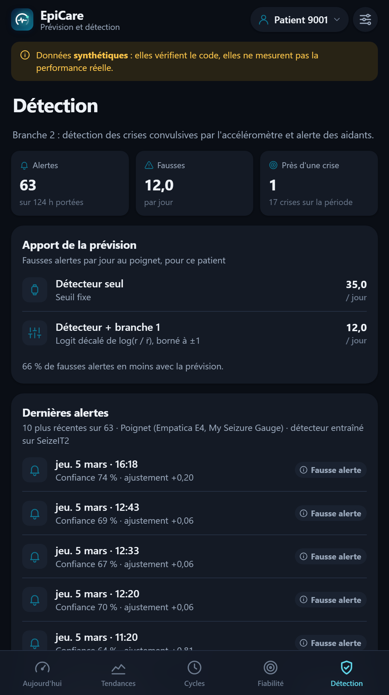

Both models are coded and tested; the whole live chain is still missing. Branch 1 (seizure risk forecasting) and Branch 2 (convulsive seizure detection) run end to end, but only on synthetic data so far. The app shows their results without receiving any live data.
Four things remain to finish the prototype: the watch, the Bluetooth link, live detection on the phone and the alert to caregivers. Meanwhile, the real model results are computed on a computer.
Green: done. Orange: coded but not yet run on real data, or not yet live. Red: not started. The watch sends its data to the phone, which detects the seizure, starts the countdown on the watch, then alerts the caregivers. Seizures confirmed by the patient flow back into Branch 1.
| Part | Status | Details |
|---|---|---|
| Branch 1 · risk forecasting | Coded | Seizure probability over 1 h and 24 h, personal cycles, calibration. Tested on synthetic data; the real My Seizure Gauge archive has not been processed on this PC yet. |
| Branch 2 · detection | Coded | Full pipeline (SeizeIT2 reading, signal processing, models, decision, evaluation). Real data format checked. Real data downloading. |
| Branch 1 → Branch 2 link | Done | The risk shifts the detector threshold, capped at ±1. Simulation from the report (§7) and wrist test on Branch 1's patients. |
| App · results screens | Done | Today, Trends, Cycles, Reliability, Detection. Runs in Expo Go, offline. |
| App · live data and alerts | To do | Bluetooth reception, live detector, countdown, caregiver alert, seizure diary, contacts. |
| Watch | To do | Hardware choice, watch firmware (sensors, Bluetooth, vibration, Cancel button). |
| "Everyday movement" recordings | To do | Brushing teeth, clapping, running, shaking a bottle, bus… on the wrist. The CSV format is ready. |
The branch2/ folder follows the layout of branch1/: a Python package, 10 automated tests and a command line.
| Step (report §5) | What the code does |
|---|---|
| Data | Reads SeizeIT2 (BIDS, EDF) with no external library; downloads directly from OpenNeuro and resumes automatically. |
| Signal | Resampling to 32 Hz, magnitude, gravity removed, 10 s windows with 50 % overlap; heart rate extracted from the ECG. |
| Models | Baseline: random forest on hand-made features (dominant frequency, 2–8 Hz power, regularity, energy, heart-rate change). Main: small 1D convolutional network, with or without heart rate, exportable to the watch (ONNX). |
| Decision | A seizure is declared after 15–20 s of consecutive positive windows; one alert per episode; at most 3 alerts per hour. |
| Evaluation | Split by patient, never by window; threshold tuned only on training patients. Metrics: seizures detected, false alarms per day, delay. |
| Fusion with Branch 1 | The detector runs on the wrist data (Empatica E4) of Branch 1's patients, with their hourly risk as the prior. Results go to the app's Detection tab. |
| Finding | Consequence |
|---|---|
| 57 convulsive seizures in 38 patients (out of 886 seizures, 125 patients) | Few examples: the model must stay simple, and we download only these 38 patients first (19 GB out of 126 GB). |
| The SeizeIT2 sensor is on the chest and neck, at 25 Hz, not on the wrist | The model must be checked, and probably adjusted, on wrist data: the E4 from My Seizure Gauge and our watch. |
| The files say "g" but read 0.50 g at rest instead of 1 g | Fixed: automatic calibration on gravity. Without it, the model would not have worked on a watch. |
| On a real seizure (patient sub-015): movement energy × 25, weak rhythm on the chest; ECG unreadable during the seizure, then heart rate +29 bpm | The detector will rely mostly on energy and heart rate. The rhythm should be clearer on the wrist. |
| 258 hyperkinetic seizures (strong movement, but not convulsive) | They count neither as detections nor as false alarms. |

Screenshots on synthetic data (yellow banner); the app's interface is in French. The app reads a results file produced on a computer; it does not receive any sensor data yet.
| # | Task | Role (report) | Note |
|---|---|---|---|
| 1 | Choose the watch | Whole team | Decides everything else (see section 6). |
| 2 | Watch firmware: sensors at 32 Hz, Bluetooth streaming, vibration, countdown, Cancel button | App and alert chain | With a T-Watch: C++ (Arduino or ESP-IDF). |
| 3 | Bluetooth in the app | App and alert chain | Expo Go does not support Bluetooth: a development build is needed (EAS, free) with react-native-ble-plx. |
| 4 | Live detector on the phone | Branch 2 + App | Port the features to JavaScript and export the model. On the watch later, if it can handle it. |
| 5 | Alert chain: countdown, message to the caregiver with GPS, next contact if no answer, new alert after long stillness | App and alert chain | On iPhone, an app cannot send an SMS by itself: a small server is needed (Firebase + SMS service) or a push notification to the caregiver. |
| 6 | Missing screens: contacts and settings, seizure diary (confirm or reject each alert), export for the doctor | App | Confirmed seizures feed Branch 1; false alarms become negative examples for Branch 2. |
| 7 | Real Branch 2 results on SeizeIT2 (milestone M2), then the convolutional network (M4) | Branch 2 + Data | Download in progress (about 14 h); PyTorch to install for the network. |
| 8 | Real Branch 1 results on My Seizure Gauge | Branch 1 + Data | Download at least one archive (3.3 GB for patient 1869). |
| 9 | Record everyday movements with our watch | Branch 2 | Best test against false alarms; also used to adjust the model to the wrist. |
| 10 | Final fusion (milestone M5): real Branch 2 results on the wrist, with Branch 1's real risk | Whole team | Code ready (python -m epicare_b2 fuse). |
| 11 | Demo rehearsal, report, presentation (M6) | Whole team | See the scenario below. |
Background Bluetooth and sending alerts are much simpler on Android. Recommended: Android for the demo, while the app stays compatible with iPhone.
Push notification to a caregiver app (Firebase, free), or SMS through a paid service (Twilio, a few cents per message). Recommended: push for the demo, with SMS as an option.
Demo planned in the report. A team member wears the watch; the app shows today's risk, replayed from a My Seizure Gauge patient. They imitate the rhythmic movement of a seizure: the countdown starts, nobody cancels, and a second phone receives the alert with the location. Then they brush their teeth, and nothing is triggered. The seizure is simulated and the demo says so: validation comes from the datasets.